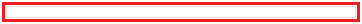
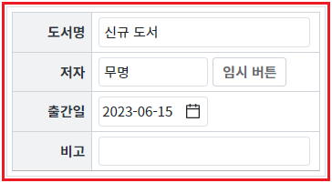
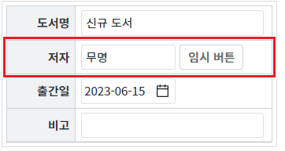
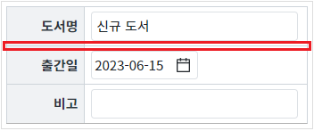
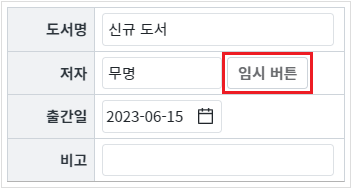
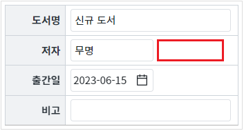

컴포넌트에 공통으로 제공하는 함수 'show'와 'hide'의 사용 예시입니다. 함수 'show'와 'hide'는 CSS 속성인 'display'와 'visibility'를 사용하여 컴포넌트를 보이게 하거나 숨기는 기능을 제공합니다.
함수 'hide'는 브라우저에 표시된 'element'의 'style.visibility' 값을 'hidden'으로 설정하고, 'element'의 'style.display' 값을 'none'으로 설정합니다. 함수 'show'는 브라우저에 표시된 'element'의 'style.visibility' 값을 'visible'로 설정하고, 첫 번째 인자 값으로 지정한 값을 'element'의 'style.display'에 할당합니다. 첫 번째 인자 값이 지정되지 않으면 'block'이 할당됩니다.
또 다른 방법으로는 CSS 파일에 'display:none;'을 클래스로 정의한 후, 컴포넌트의 함수 'addClass'와 'removeClass'를 호출하여 컴포넌트 표시 여부를 설정할 수 있습니다.
Group 컴포넌트 숨기기/보이기
TableLayout의 TR 영역 숨기기/보이기
Trigger 컴포넌트 숨기기/보이기
STEP1. 초기 상태 확인하기
Group 컴포넌트로 Table이 구성되어 있습니다.
그림 1.브라우저(Chrome) 실행 예시
STEP2. Group 컴포넌트를 숨깁니다.
버튼 Group 숨기기을 클릭합니다.STEP3. 실행된 결과를 확인합니다.
Group 컴포넌트가 숨겨집니다.
그림 2.브라우저(Chrome) 실행 예시

STEP4. Group 컴포넌트를 표시합니다.
버튼 Group 보이기을 클릭합니다.STEP5. 실행된 결과를 확인합니다.
Group 컴포넌트가 표시됩니다.
그림 3.브라우저(Chrome) 실행 예시

STEP1. 초기 상태 확인하기
Group 컴포넌트로 Table이 구성되어 있습니다.
두 번째 행('저자' TR 영역)이 표시됩니다.그림 4.브라우저(Chrome) 실행 예시

STEP2. 두 번째 행('저자' TR 영역)을 숨깁니다.
버튼 두 번째 행('저자' TR 영역) 숨기기을 클릭합니다.STEP3. 실행된 결과를 확인합니다.
두 번째 행이 숨겨집니다.
그림 5.브라우저(Chrome) 실행 예시

STEP4. 두 번째 행('저자' TR 영역)을 표시합니다.
버튼 두 번째 행('저자' TR 영역) 보이기을 클릭합니다.STEP5. 실행된 결과를 확인합니다.
두 번째 행('저자' TR 영역)이 표시됩니다.그림 6.브라우저(Chrome) 실행 예시
STEP1. 초기 상태 확인하기
Group 컴포넌트로 Table이 구성되어 있습니다. 두 번째 행에 버튼 '임시 버튼'이 표시되어 있습니다.
그림 7.브라우저(Chrome) 실행 예시

STEP2. 버튼 '임시 버튼'을 숨깁니다.
버튼 '임시 버튼' 숨기기을 클릭합니다.STEP3. 실행된 결과를 확인합니다.
두 번째 행의 버튼 '임시 버튼'이 숨겨집니다.
그림 8.브라우저(Chrome) 실행 예시

STEP4. 버튼 '임시 버튼'을 표시합니다.
버튼 '임시 버튼' 보이기을 클릭합니다.STEP5. 실행된 결과를 확인합니다.
버튼 '임시 버튼'이 표시됩니다.
그림 9.브라우저(Chrome) 실행 예시
원하는 시점에 컴포넌트의 함수 'hide'를 이용하여 스크립트를 작성합니다.
[소스 코드 예시]
// Group 'grp_exam1'을 숨깁니다. // 브라우저에 구성된 element의 'style' 속성에 'display: none;visibility: hidden;'이 설정됩니다. grp_exam1.hide();
원하는 시점에 컴포넌트의 함수 'show'를 이용하여 스크립트를 작성합니다.
[소스 코드 예시]
// 예시 1) Group 'grp_exam1'을 표시합니다. - CSS 'visibility' 속성은 'visible'로 지정되고 'display' 속성의 설정 값은 'block'으로 지정됩니다. grp_exam1.show(); // 예시 2) Group 'grp_exam1'을 표시합니다. - CSS 'visibility' 속성은 'visible'로 지정되고 'display' 속성의 설정 값을 빈 문자열로 지정됩니다. grp_exam1.show(""); // 예시 3) Group 'grp_exam1'을 표시합니다. - CSS 'visibility' 속성은 'visible'로 지정되고 'display' 속성의 설정 값은 'inline-block'으로 지정됩니다. grp_exam1.show("inline-block");
show
hide